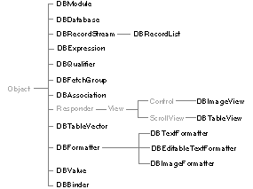

Copyright ©1995 by NeXT Computer, Inc. All Rights Reserved.
| 4 |
Database Kit
| Library: | libNeXT_s, libsys_s | |
| Header File Directory: | /NextDeveloper/Headers/dbkit | |
| Import: | dbkit/dbkit.h |
| Introduction |
| The Database Kit provides a comprehensive set of tools, classes, and protocols for building applications that access database servers such as those provided by Oracle or Sybase. The Kit's features include: |
| Communication with client-server databases through an adaptor. | ||
| The DBModeler application, a tool for building Entity-Relationship models. | ||
| Classes and protocols that are used by DBModeler to represent a model. | ||
| Classes for storing data that's fetched from a database. | ||
| User interface objects for display and editing data. |
| The concepts of Database Kit use, and guidelines for building a database application are provided in /NextLibrary/Documentation/NextDev/Concepts/DatabaseKit. In this chapter are specifications for the Database Kit's classes and protocols.
Inheritance Hierarchy The inheritance hierarchy for the Kit's classes is shown below: |
|  |
| More important than the hierarchical arrangement of classes is their grouping into "access layer" and "interface layer": |
| The access layer provides the core of any Database Kit application. The classes (and protocols) therein represent the components of a database model, store data that's retrieved from a database server, and communicate with the server. The access layer classes are DBDatabase, DBRecordStream (and its subclass, DBRecordList), DBExpression, DBQualifier, DBValue, and DBBinder. The most important access layer protocols are DBEntities, DBProperties, and DBTypes. (There are other access layer protocols, but they're used to complete the implementation of the access layer classes. As such, they're referred to in the specifications of those classes.) | ||
| The interface layer, as its name implies, provides the classes and protocols that are used in your application's interface. The interface objects display data that's drawn from the access layer objects, let the user manipulate the displayed data, and provide controls that trigger data transactions. The most important interface layer classes are DBTableView, DBImageView, DBModule, DBFetchGroup, and DBAssociation. |
| However, the functionality of the Database Kit has been superceded by the Enterprise Object Framework. The Enterprise Object Framework product (available separately from NEXTSTEP) provides a way to develop object-oriented database applications. It provides tools for defining an object model and mapping it to a data model, which allows you to create objects that encapsulate both data and methods for operating on that data--and these objects can persist in a relational database accessible via the Framework's data services. You should use the Enterprise Objects Framework to develop database applications instead of the Database Kit. |